茨城県古河市 西牛谷
H O M A R E Y A
豚骨と醤油のスープに、太めの麺。
かたさ・濃さ・油の三つを、お好みで承ります。
不定休をいただいております。お出かけ前にお電話でお確かめください。 混み具合やお席の空きも、お答えいたします。
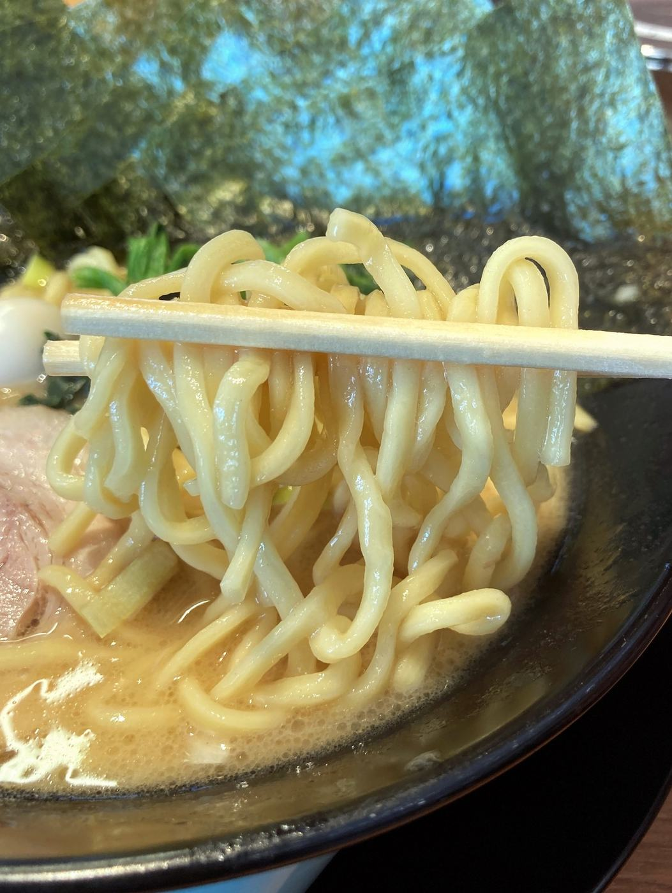
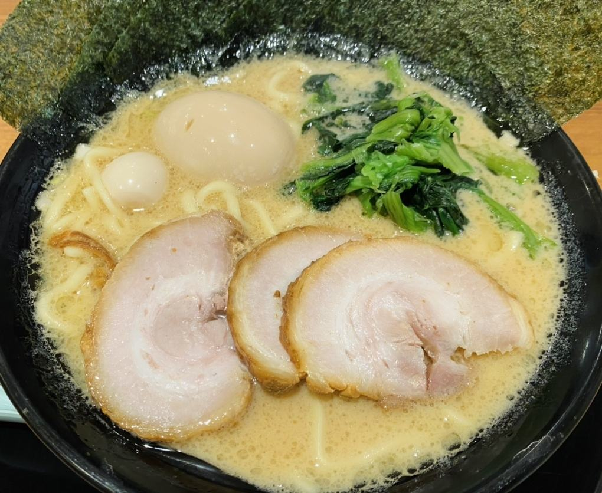
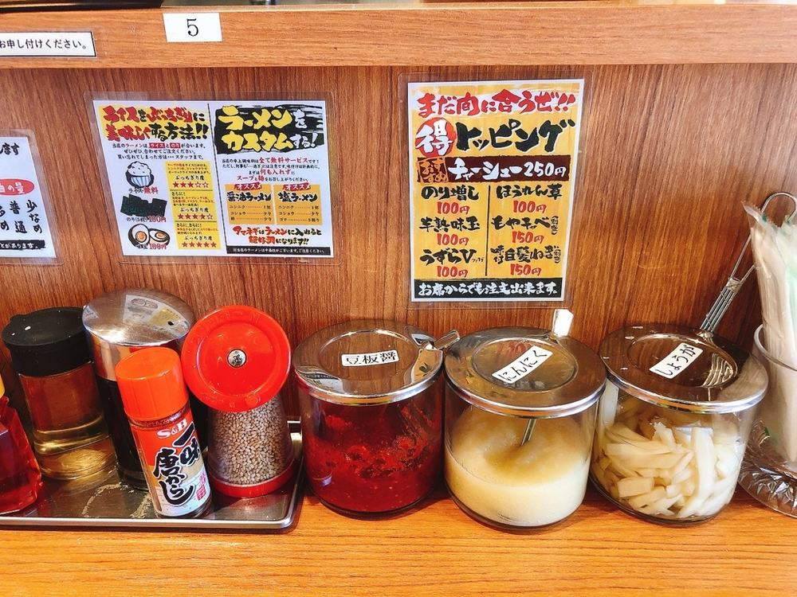
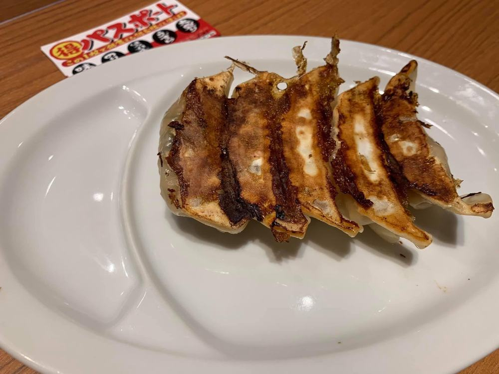
お好みのうかがい方
食券をお渡しいただくときに、麺のかたさ・味の濃さ・油の量をお伺いします。 はじめてのお客様は「ふつう」とおっしゃってください。当店で合わせた塩梅でお出しします。 二杯目からは、少しずつずらしてお試しください。
カウンターでのひとこと
麺はふつう、味はふつう、油はふつうでお願いします。
お伝えいただかなかったときは、すべて「ふつう」でお作りします。途中で足りないと思われましたら、卓上の薬味でお好きに調えてください。
お値段は入口の食券機に掲げております。先にお知りになりたいときは、0280-23-1265 までお気軽にお尋ねください。
一杯のこと
海苔、ほうれん草、チャーシュー、うずらの卵。丼のふちまで、しっかりとお注ぎします。 醤油のほかに塩と味噌をご用意しておりますので、その日のお腹に合わせてお選びください。
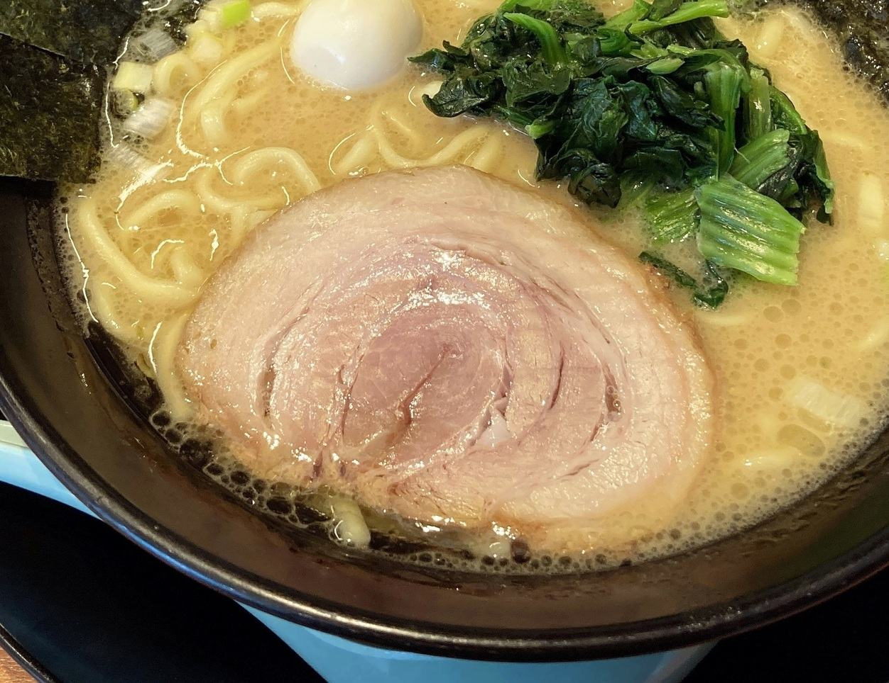
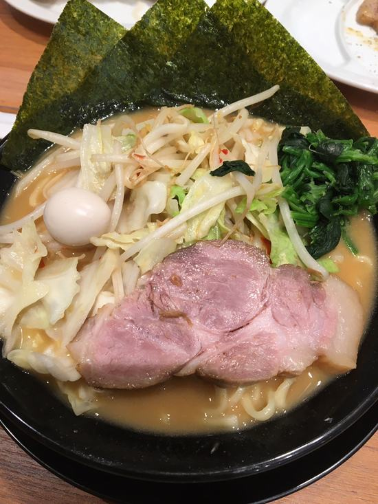
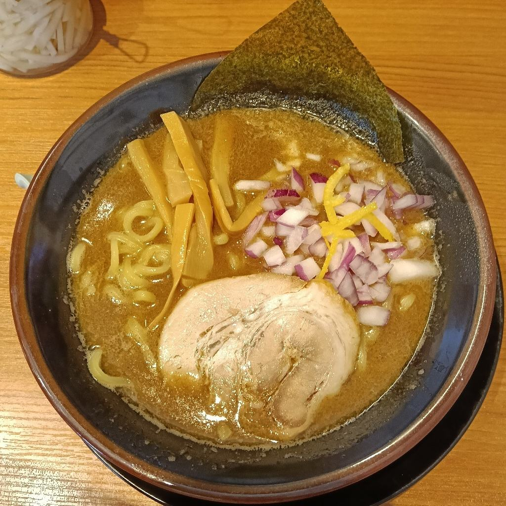
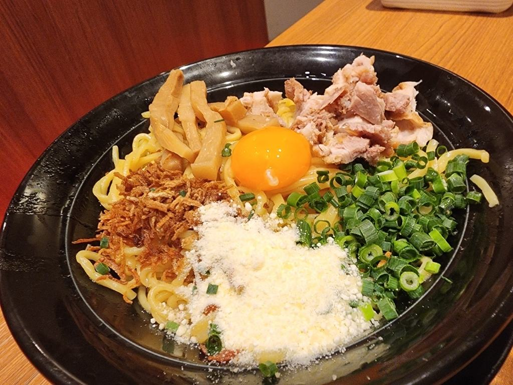
ライスと、卓上のこと
店の奥にライスバーをご用意しております。茶碗にお好きなだけお盛りください。 スープにひたした海苔をご飯にのせる召し上がり方も、どうぞお試しください。
卓上には薬味と調味料を並べております。刻んだ玉ねぎもご自由にお使いいただけます。 途中で味を変えながら、最後までお楽しみください。
豆板醤・ラー油・辛子は卓上であとからお足しいただくものですので、 お出しする一杯そのものは辛くございません。お子様との取り分けにもどうぞ。
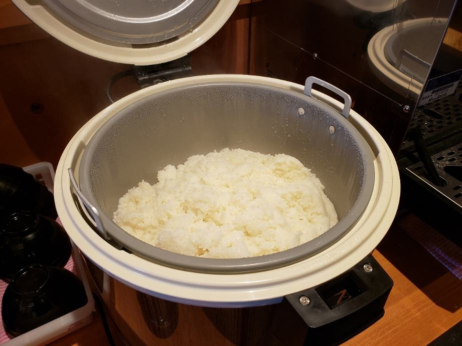
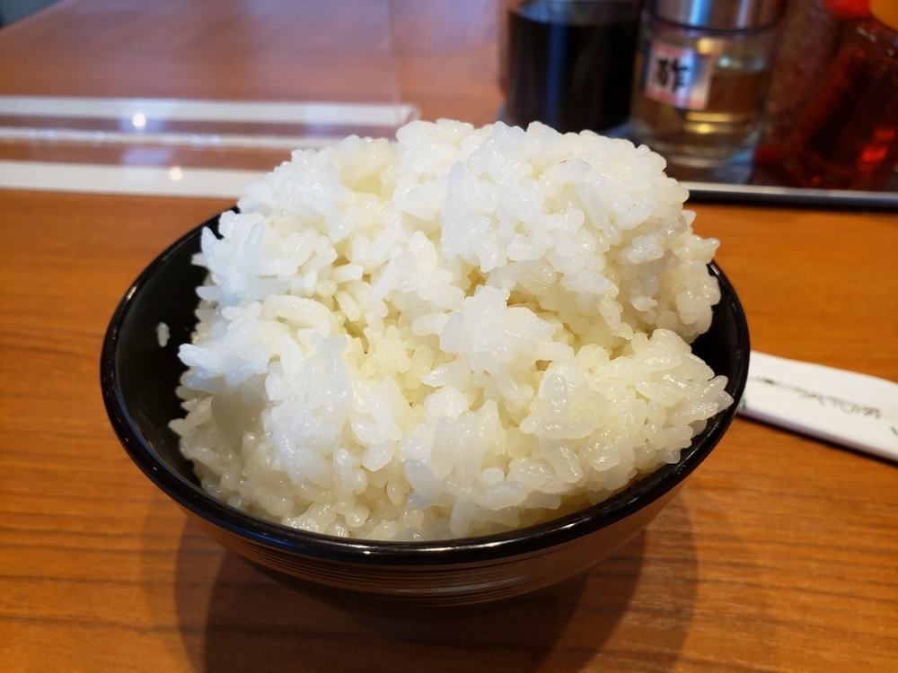
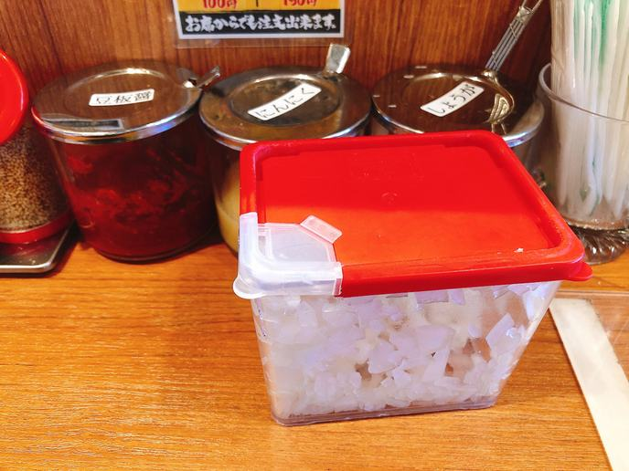
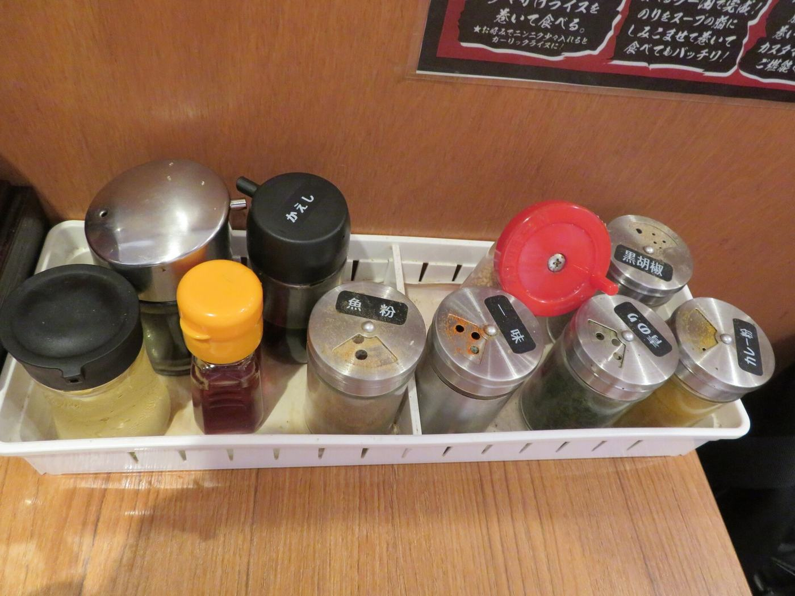
お客様の声
「醤油、味噌、塩があるのですが、個人的には塩が好きです！」
お客様の声より
「ライスはセルフで無料で食べ放題になっています」
お客様の声より
「常にマイナーチェンジしている、良い改善。」
お客様の声より
アクセス
| 住所 | 〒306-0233 茨城県古河市西牛谷616-1ケーズデンキ古河中央店のそばです。 |
|---|---|
| 電話 | 0280-23-1265混み具合やお席の空き、お値段も、お電話でお答えいたします。 |
| 営業時間 | 平日 11:00〜15:00／17:00〜22:00 土・日・祝 11:00〜22:00お出かけ前にお電話でお確かめいただけますと確かです。 |
| 定休日 | 不定休お休みをいただく日がございます。 |
| 席数 | カウンター席・テーブル席 30席 |
| 駐車場 | あり |
| ご注文 | 店内の食券機でご注文いただきます |
| 喫煙 | 全席禁煙 |